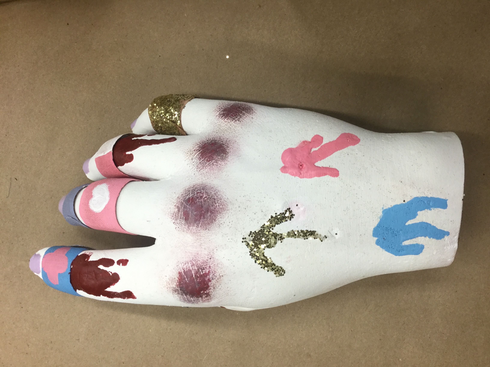
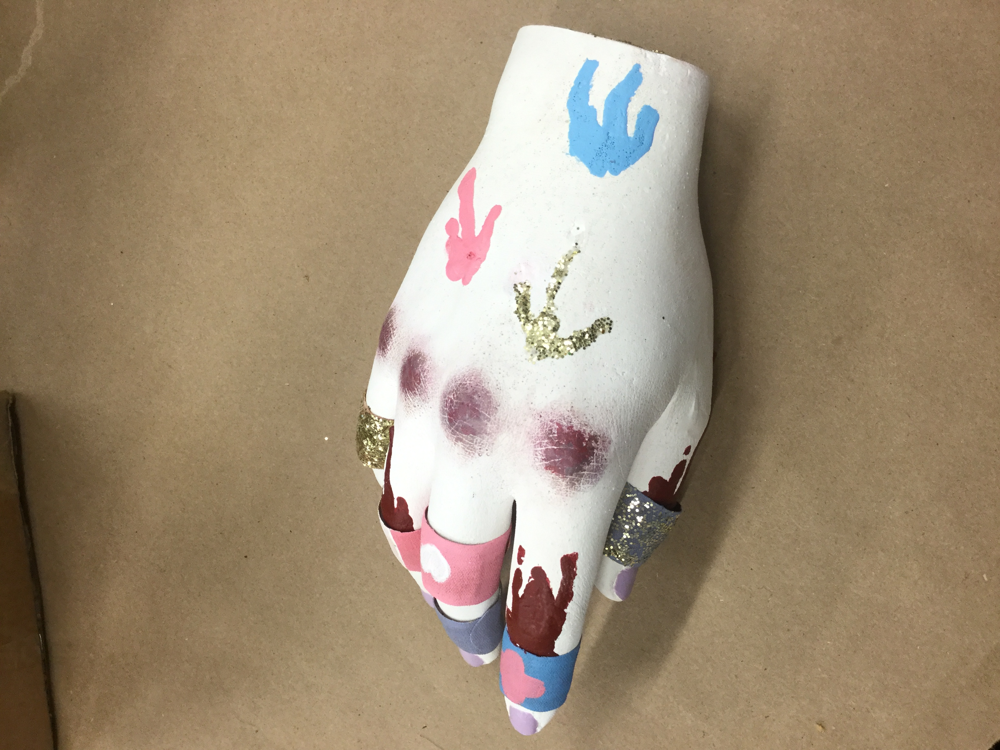

It's Just A Look
December 2018 | Sculpture | Mixed Media (Plaster, Acrylic Paint)
A sculpture inspired by the "yami-kawaii" or "sick-cute" fashion trend in Japan. Gore and medical items are common motifs with this trend. How far is one willing to go to express themselves or to bring their mental illnesses to light? Do people actually get relief from dressing this way or do they feed into their own depression? It seems like a lot of people who get into this trend don't understand its background and message; they only care for the aesthetic, but it seems like it could have a negative effect on impressionable youth. And those who claim to use as a form of expression and relief from their depression rely on it too much, like a crutch.